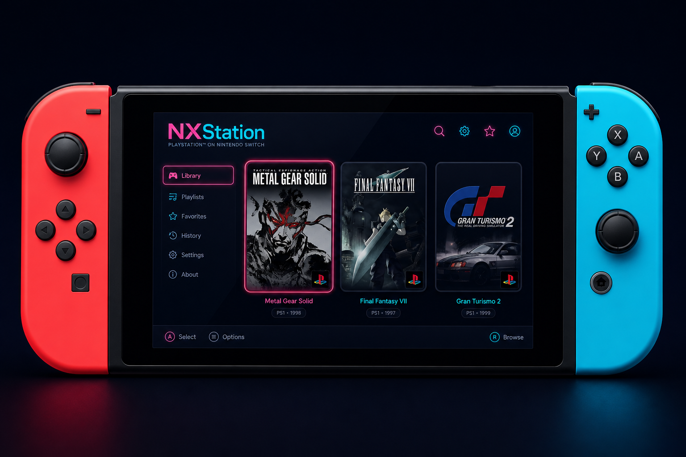
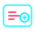

Media Collection Compatibility
Fully compatible with ES-DE Arts Media. Drop your collection’s media and gamelist.xml into the roms folder and it works immediately.
Nintendo Switch Homebrew
A fast, native, and customizable homebrew frontend built specifically for Nintendo Switch.

Objective
A Switch-native frontend that respects your collection, scrapes what you need, and gets out of the way when you play.
Fully compatible with ES-DE Arts Media. Drop your collection’s media and gamelist.xml into the roms folder and it works immediately.
Batch online scraper ready for ScreenScraper — pull box art, screenshots, and metadata in one pass.
Launch from NXStation opens the ROM in RetroArch. Closing a game returns you to your last browse position seamlessly.
Ready with many color themes for personalization, plus support for customized themes.
C++ / native speed — zero bloated webview lag. Built for handheld responsiveness.
Perfect controller mapping with touchscreen support, tuned for Switch hardware.
Capabilities
Everything you need to browse, scrape, theme, and launch — without leaving the Switch.

Batch or individual box art, screenshots, and game metadata using ScreenScraper.
Auto-scans SD card structures, nested subfolders, and custom playlists. Fully follows the ES-DE roms structure format.
Many color themes for personalization and customized theme support. Future theme downloader planned.
Keep your art and metadata synced on the go without active Wi-Fi.
Native launching support for popular Switch emulation cores.
Background music and retro sound-effects toggle future
Interface
Scroll or use the controls to preview core views and theme modes.


Get started
Three steps from download to your library on Switch.
.nroGrab the release from GitHub and verify the version matches your Atmosphere build.
Copy to /switch/NXStation/ on your SD card (alongside config as needed).
Launch from the Homebrew Menu. Title Override mode required for full memory access.
Support
Quick answers about NXStation, setup, scraping, and how you can help.
Yes, NXStation is completely free. You can download it and use it.
Planned features include search, jump-to navigation, a screen saver, and background music.
I am not sure at the moment.
Yes — help with background images and placeholders would be especially useful. If you have experience managing a wiki, please get in touch. Beyond that, bug testing is hugely appreciated. If you have any dime to spare, consider donating via GitHub Sponsors. Engagement and small incentives keep development going longer.
For now: nes, snes, gb, gbc, gba, nds, n64, megadrive, psx, psp, pce.
sdmc:/roms/{systemId}/ (ES-DE-style folders, e.g. snes, nes).gamelist.xml alongside your collection — NXStation picks them up.roms_config.json next to the .nro if you need custom systems or cores.user_screenscraper.json) if required.